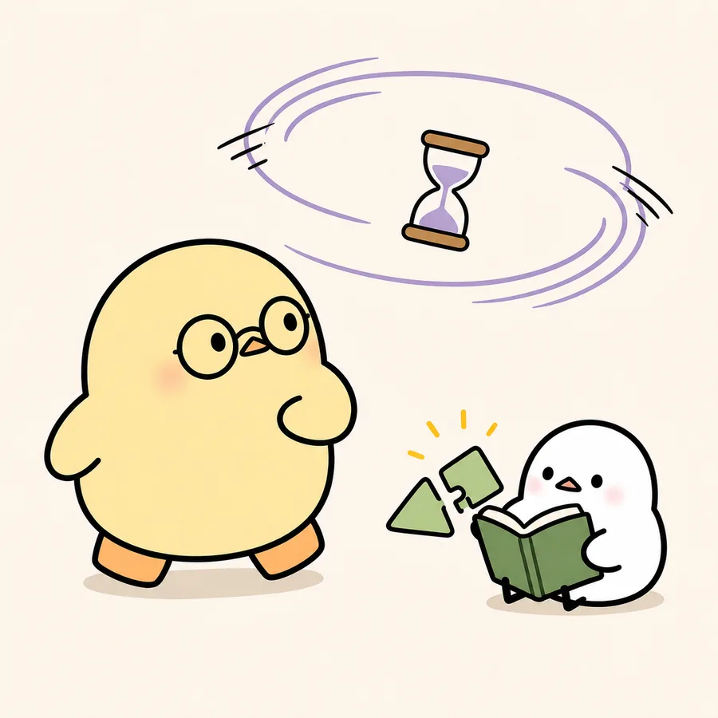
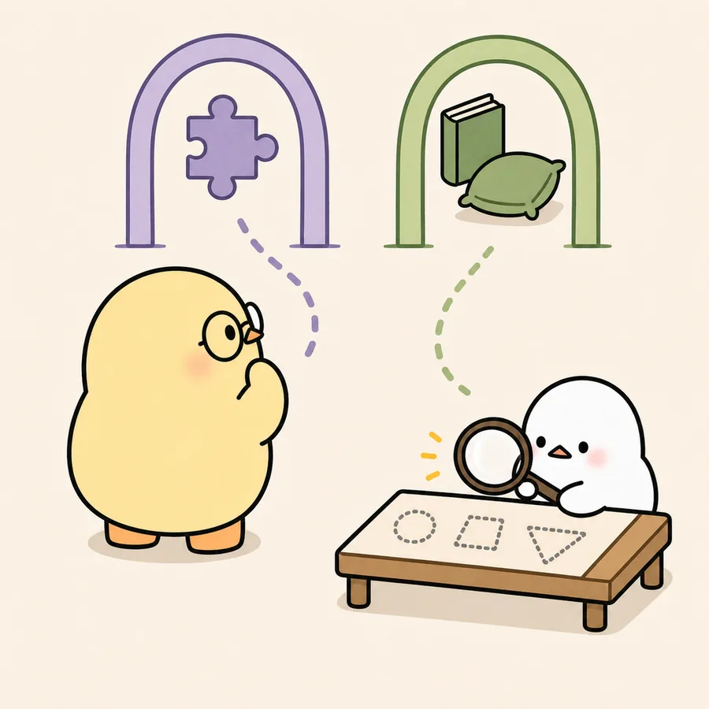
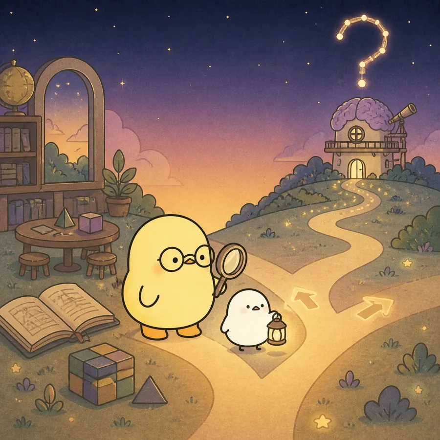

ILLUSTRATED OVERVIEW
4컷으로 읽는 덤블도어 가설
인지 활력이 어떻게 선택과 경험으로 달라질 수 있는지, 논문의 논리를 네 장면으로 먼저 살펴봅니다.
옆으로 넘겨 4컷 보기
-

인지 노화에는 손실과 유지·성장이 함께 있다.
-

어떤 활동을 고르는가 × 그 안에서 어떻게 주의를 쓰는가
-
효과의 지속과 효과의 범위는 다른 질문이다.
-

덤블도어 가설은 결론이 아니라 검증할 질문이다.